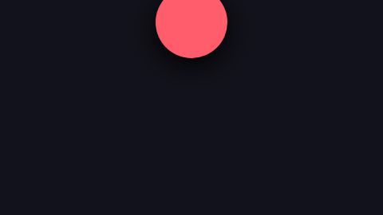
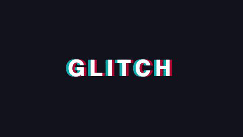
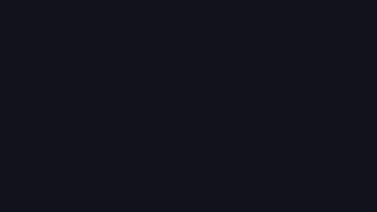
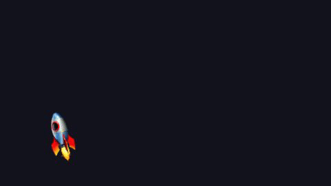
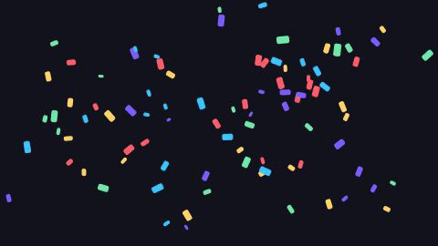
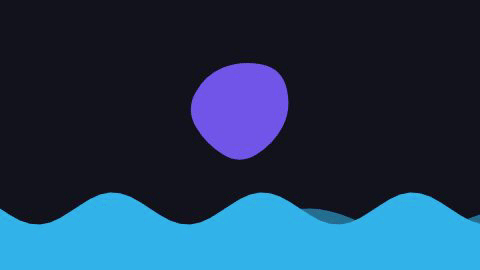

Drag-and-drop animation editor built on Remotion — timelines, presets, effects, real MP4 export up to 4K60.
npm install
npm run dev # editor at http://localhost:5173 (+ local render server)Build by dragging Presets, Elements, and Effects from the left panel (use the 🔎 search box to find things fast). Tracks are layers — the top track renders on top. Select a clip to edit every parameter in the Inspector; drag on the canvas to reposition it. Everything autosaves to your browser, and Save/Open exchanges portable JSON files.
Every GIF below was rendered by the app's own pipeline (npm run docs:gifs).






| Element | What it is |
|---|---|
| 🅣 Text | Text layer — font, size, weight, color, letter-spacing |
| 🔢 Counter | Number counting A→B over the clip (prefix/suffix/decimals) |
| ⬛ Shape | Rect, circle, ellipse, triangle, star, polygon, pie |
| 🖼️ Image | Image by URL or 📁 uploaded file — transparent PNG/SVG supported |
| 🎥 Video / 🎵 Audio | Media by URL, with volume, speed, and trim |
| 🎞️ GIF | Animated GIF synced to the timeline |
| 🌊 Wave | Layered animated sine waves |
| 🫧 Blob | Organic morphing blob — stack for fluid looks |
| 🎊 Particles | Confetti, snow, rain, sparkles, bubbles, embers — deterministic, render-safe |
| 😀 Emoji / 🎨 Background | Stickers and full-frame gradient fills |
Drag any effect onto a clip; stack freely. Every parameter is editable in the Inspector.
Movement effects have a Curve parameter with a live graph: easeIn/Out/InOut, linear, bounceOut (ball landing), elastic (springy settle), overshoot (goes past, comes back).
bounceOut.Animates position / scale / rotation / opacity from A to B over any frame range inside the clip. Stack several Transforms with different Start at frames for multi-step choreography.
Add the Motion Path effect to a clip, then either:
M 0 0 C 150 -250 450 -250 600 0 (arc) or M 0 0 Q 200 -150 400 0 T 800 0 (s-curve). Coordinates are relative to the element.Enable Rotate to follow path for planes, arrows, and fish.
Double-click (or drag onto the timeline) to insert ready-made, canvas-sized animations: Title Intro, Lower Third, Glitch Title, Ken Burns Photo, Social Pop, Stat Counter, News Ticker, Quote Card, End Card. After inserting they're normal clips — retext, recolor, retime.
out/ and downloads from the dialog.npm run render -- project.json out/video.mp4| Key | Action |
|---|---|
| Space | Play / pause |
| ⌘Z / ⇧⌘Z | Undo / redo |
| ⌘C / ⌘V | Copy / paste selection at playhead |
| ⌘D | Duplicate selection |
| Delete | Remove selected clip(s) |
| Esc | Clear selection / cancel path drawing |
| ⌘/Ctrl-click clip | Add/remove from multi-selection |
| Shift-click lane | Move selected clip to that track |
This page is fully static — host the public/docs/ folder anywhere (GitHub Pages, Netlify, S3…).
During development it's served at http://localhost:5173/docs/. Regenerate the GIFs any time with
npm run docs:gifs. Developer docs live in DOCS.md.